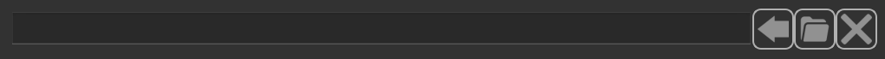
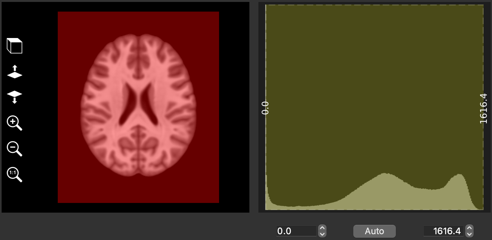

Widgets
Single file selection
This widget has an edit box on the left and two or three buttons on the right.
- File name box
This edit box displays the selected file name. A tooltip pops when mouse pointer remains over the text. It shows attributes of the object stored in the selected file.

Left-click to display a menu with a list of the volume(s) that are open in the Thumbnail bar. This button is optional and will not always be visible.

Left-click to show a file selection dialog.

Left-click to clear the selected file name field.
Multiple file selection
This widget has a list box of selected files at the top, and three or four buttons at th bottom.
- Add button
Left-click to show a file selection dialog and add files in the list box.
- Remove button
Left-click to remove selected files in the list box.
- Remove all button
Left-click to remove all files from the list box.
- button
Left-click to display a menu with a list of the volume(s) that are open in the Thumbnail bar. This button is optional and will not always be visible.
Thresholding
This widget has a view box on the left, a threshold selection box on the right and a button bar at the bottom.
- view box
Shows volume with overlaid ROI in red. Voxels of this ROI have a volume signal in the range of the thresholds defined in the threshold selection box, i.e. ROI is the result of volume thresholding. This view is updated in real time as thresholds change.
- threshold selection box
This box shows the extent of thresholds as a yellow frame overlaid on the volume histogram. The left edge of the frame represents the lower threshold, the right edge the upper threshold. Threshold values are written vertically in the center of each edge. The frame can be moved by pressing the left mouse button and dragging. Press the left mouse button and drag to move the left or right border (click inner part inside the frame).
button bar
Left edit box to display and edit lower threshold.
Right edit box to display and edit upper threshold.
Middle button to set automatic thresholds based on the volume histogram.